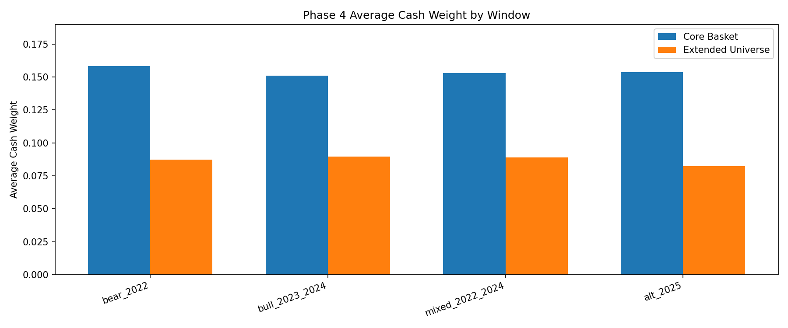
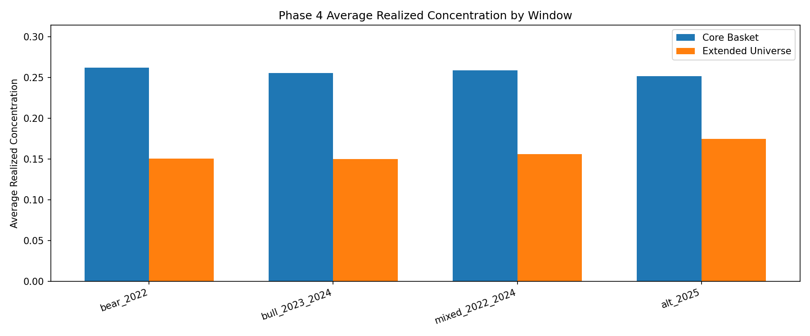
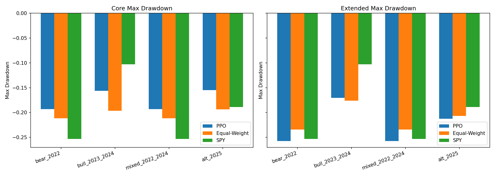
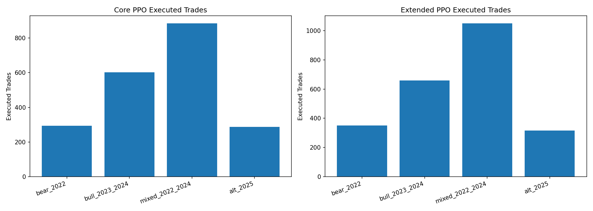

Interpretation: The current Group B core branch is robust and operationally usable, but defense behavior is still incomplete. The extended universe improves resilience in some adverse windows, yet cash-raising and drawdown control remain inconsistent relative to equal-weight baselines.
| Universe | Window | PPO Final | Equal-Weight Final | SPY Final | PPO Sharpe | PPO MDD | PPO Trades | Avg Cash | Avg Concentration | HTML |
|---|---|---|---|---|---|---|---|---|---|---|
| core | bear_2022 | 90858.59 | 91402.96 | 80034.57 | -0.3237 | -19.33% | 293 | 0.1582 | 0.2621 | Open |
| core | bull_2023_2024 | 181451.24 | 234603.63 | 122597.42 | 1.8247 | -15.65% | 602 | 0.1511 | 0.2556 | Open |
| core | mixed_2022_2024 | 170990.32 | 143699.58 | 122597.42 | 1.0286 | -19.33% | 884 | 0.1531 | 0.2589 | Open |
| core | alt_2025 | 139639.89 | 147025.63 | 116660.31 | 1.7528 | -15.50% | 288 | 0.1538 | 0.2517 | Open |
| extended | bear_2022 | 99989.30 | 102498.66 | 80034.57 | 0.1370 | -25.73% | 351 | 0.0875 | 0.1508 | Open |
| extended | bull_2023_2024 | 186347.67 | 253149.14 | 122597.42 | 1.9561 | -17.03% | 660 | 0.0896 | 0.1501 | Open |
| extended | mixed_2022_2024 | 181567.04 | 170993.41 | 122597.42 | 1.0688 | -25.73% | 1050 | 0.0888 | 0.1563 | Open |
| extended | alt_2025 | 140307.41 | 135361.23 | 116660.31 | 1.6263 | -21.25% | 316 | 0.0822 | 0.1746 | Open |




{
"core": {
"bear_2022": {
"window": "bear_2022",
"ppo": {
"initial_portfolio_value": 100000.0,
"final_portfolio_value": 90858.58506088164,
"cumulative_return": -0.09141414939118364,
"sharpe_ratio": -0.32372354313018625,
"max_drawdown": -0.1933160887984987,
"executed_trades": 293,
"trade_rate": 1.1673306772908367,
"average_turnover": 0.03412012362694854
},
"equal_weight": {
"initial_portfolio_value": 100000.0,
"final_portfolio_value": 91402.96414865016,
"cumulative_return": -0.08597035851349832,
"sharpe_ratio": -0.2700996912775139,
"max_drawdown": -0.21161978518076774,
"executed_trades": 5,
"trade_rate": 0.0199203187250996,
"average_turnover": 0.016592982204202623
},
"spy": {
"initial_portfolio_value": 100000.0,
"final_portfolio_value": 80034.56956101989,
"cumulative_return": -0.19965430438980114,
"sharpe_ratio": -0.8011629098972767,
"max_drawdown": -0.2533349951980758,
"executed_trades": 1,
"trade_rate": 0.00398406374501992,
"average_turnover": 0.00398406374501992
},
"average_cash_weight": 0.15823593760448013,
"average_target_concentration": 0.2626272523343593,
"average_position_concentration": 0.26212611140702524,
"review_step_count": 4,
"html": "artifacts/phase_04/stress/core/bear_2022/ppo/index.html"
},
"bull_2023_2024": {
"window": "bull_2023_2024",
"ppo": {
"initial_portfolio_value": 100000.0,
"final_portfolio_value": 181451.23679335613,
"cumulative_return": 0.8145123679335613,
"sharpe_ratio": 1.8246962184605398,
"max_drawdown": -0.15647158211856083,
"executed_trades": 602,
"trade_rate": 1.199203187250996,
"average_turnover": 0.03245072511445583
},
"equal_weight": {
"initial_portfolio_value": 100000.0,
"final_portfolio_value": 234603.62823734852,
"cumulative_return": 1.3460362823734853,
"sharpe_ratio": 1.8817100058728684,
"max_drawdown": -0.1964911494188727,
"executed_trades": 5,
"trade_rate": 0.0099601593625498,
"average_turnover": 0.015769593408588682
},
"spy": {
"initial_portfolio_value": 100000.0,
"final_portfolio_value": 122597.42466355897,
"cumulative_return": 0.22597424663558963,
"sharpe_ratio": 1.7480136390807708,
"max_drawdown": -0.10279284388460419,
"executed_trades": 0,
"trade_rate": 0.0,
"average_turnover": 0.00199203187250996
},
"average_cash_weight": 0.1510846837647161,
"average_target_concentration": 0.2559961432304167,
"average_position_concentration": 0.25562713689697597,
"review_step_count": 8,
"html": "artifacts/phase_04/stress/core/bull_2023_2024/ppo/index.html"
},
"mixed_2022_2024": {
"window": "mixed_2022_2024",
"ppo": {
"initial_portfolio_value": 100000.0,
"final_portfolio_value": 170990.3201260956,
"cumulative_return": 0.7099032012609561,
"sharpe_ratio": 1.0286116311965214,
"max_drawdown": -0.1933160887984987,
"executed_trades": 884,
"trade_rate": 1.1739707835325366,
"average_turnover": 0.032758215659105236
},
"equal_weight": {
"initial_portfolio_value": 100000.0,
"final_portfolio_value": 143699.5821439123,
"cumulative_return": 0.43699582143912297,
"sharpe_ratio": 0.7542436254970102,
"max_drawdown": -0.21161978518076774,
"executed_trades": 5,
"trade_rate": 0.006640106241699867,
"average_turnover": 0.012583296916670247
},
"spy": {
"initial_portfolio_value": 100000.0,
"final_portfolio_value": 122597.42466355897,
"cumulative_return": 0.22597424663558963,
"sharpe_ratio": 0.47812356708600734,
"max_drawdown": -0.2533349951980758,
"executed_trades": 1,
"trade_rate": 0.0013280212483399733,
"average_turnover": 0.0013280212483399733
},
"average_cash_weight": 0.15314353751593426,
"average_target_concentration": 0.25931701569264726,
"average_position_concentration": 0.2588982013468248,
"review_step_count": 12,
"html": "artifacts/phase_04/stress/core/mixed_2022_2024/ppo/index.html"
},
"alt_2025": {
"window": "alt_2025",
"ppo": {
"initial_portfolio_value": 100000.0,
"final_portfolio_value": 139639.89261841972,
"cumulative_return": 0.39639892618419714,
"sharpe_ratio": 1.7528483331451414,
"max_drawdown": -0.1550232398691952,
"executed_trades": 288,
"trade_rate": 1.152,
"average_turnover": 0.033855766891764914
},
"equal_weight": {
"initial_portfolio_value": 100000.0,
"final_portfolio_value": 147025.63116322708,
"cumulative_return": 0.4702563116322709,
"sharpe_ratio": 1.5729979369252327,
"max_drawdown": -0.19358324574987273,
"executed_trades": 5,
"trade_rate": 0.02,
"average_turnover": 0.020795529636299034
},
"spy": {
"initial_portfolio_value": 100000.0,
"final_portfolio_value": 116660.30754737854,
"cumulative_return": 0.1666030754737855,
"sharpe_ratio": 0.8996140241584969,
"max_drawdown": -0.18907971614346308,
"executed_trades": 2,
"trade_rate": 0.008,
"average_turnover": 0.004
},
"average_cash_weight": 0.15377529279819965,
"average_target_concentration": 0.25196640739457665,
"average_position_concentration": 0.2516957551085001,
"review_step_count": 4,
"html": "artifacts/phase_04/stress/core/alt_2025/ppo/index.html"
}
},
"extended": {
"bear_2022": {
"window": "bear_2022",
"ppo": {
"initial_portfolio_value": 100000.0,
"final_portfolio_value": 99989.300940676,
"cumulative_return": -0.00010699059324004168,
"sharpe_ratio": 0.13699822835223585,
"max_drawdown": -0.25728749606999235,
"executed_trades": 351,
"trade_rate": 1.3984063745019921,
"average_turnover": 0.03349408238468935
},
"equal_weight": {
"initial_portfolio_value": 100000.0,
"final_portfolio_value": 102498.66305622339,
"cumulative_return": 0.024986630562233936,
"sharpe_ratio": 0.22679625452515542,
"max_drawdown": -0.23436073085108888,
"executed_trades": 10,
"trade_rate": 0.0398406374501992,
"average_turnover": 0.018808908617717366
},
"spy": {
"initial_portfolio_value": 100000.0,
"final_portfolio_value": 80034.56956101989,
"cumulative_return": -0.19965430438980114,
"sharpe_ratio": -0.8011629098972767,
"max_drawdown": -0.2533349951980758,
"executed_trades": 1,
"trade_rate": 0.00398406374501992,
"average_turnover": 0.00398406374501992
},
"average_cash_weight": 0.08747283357246043,
"average_target_concentration": 0.15109086466057867,
"average_position_concentration": 0.15082675479811294,
"review_step_count": 4,
"html": "artifacts/phase_04/stress/extended/bear_2022/ppo/index.html"
},
"bull_2023_2024": {
"window": "bull_2023_2024",
"ppo": {
"initial_portfolio_value": 100000.0,
"final_portfolio_value": 186347.6741406218,
"cumulative_return": 0.8634767414062179,
"sharpe_ratio": 1.9560831427937821,
"max_drawdown": -0.17028589440762554,
"executed_trades": 660,
"trade_rate": 1.3147410358565736,
"average_turnover": 0.0294448049678945
},
"equal_weight": {
"initial_portfolio_value": 100000.0,
"final_portfolio_value": 253149.14488299945,
"cumulative_return": 1.5314914488299944,
"sharpe_ratio": 2.1017931540539885,
"max_drawdown": -0.17598320391979294,
"executed_trades": 10,
"trade_rate": 0.0199203187250996,
"average_turnover": 0.017271880905997048
},
"spy": {
"initial_portfolio_value": 100000.0,
"final_portfolio_value": 122597.42466355897,
"cumulative_return": 0.22597424663558963,
"sharpe_ratio": 1.7480136390807708,
"max_drawdown": -0.10279284388460419,
"executed_trades": 0,
"trade_rate": 0.0,
"average_turnover": 0.00199203187250996
},
"average_cash_weight": 0.08955590307109401,
"average_target_concentration": 0.1503965607908199,
"average_position_concentration": 0.1501127735431779,
"review_step_count": 8,
"html": "artifacts/phase_04/stress/extended/bull_2023_2024/ppo/index.html"
},
"mixed_2022_2024": {
"window": "mixed_2022_2024",
"ppo": {
"initial_portfolio_value": 100000.0,
"final_portfolio_value": 181567.04259550988,
"cumulative_return": 0.8156704259550989,
"sharpe_ratio": 1.0687582960059194,
"max_drawdown": -0.25728749606999235,
"executed_trades": 1050,
"trade_rate": 1.3944223107569722,
"average_turnover": 0.03045510105343996
},
"equal_weight": {
"initial_portfolio_value": 100000.0,
"final_portfolio_value": 170993.40794595957,
"cumulative_return": 0.7099340794595956,
"sharpe_ratio": 0.9622152495544515,
"max_drawdown": -0.23436073085108888,
"executed_trades": 10,
"trade_rate": 0.013280212483399735,
"average_turnover": 0.015593289690824018
},
"spy": {
"initial_portfolio_value": 100000.0,
"final_portfolio_value": 122597.42466355897,
"cumulative_return": 0.22597424663558963,
"sharpe_ratio": 0.47812356708600734,
"max_drawdown": -0.2533349951980758,
"executed_trades": 1,
"trade_rate": 0.0013280212483399733,
"average_turnover": 0.0013280212483399733
},
"average_cash_weight": 0.08883443943994895,
"average_target_concentration": 0.15664664438677423,
"average_position_concentration": 0.1563476449165549,
"review_step_count": 12,
"html": "artifacts/phase_04/stress/extended/mixed_2022_2024/ppo/index.html"
},
"alt_2025": {
"window": "alt_2025",
"ppo": {
"initial_portfolio_value": 100000.0,
"final_portfolio_value": 140307.4112754145,
"cumulative_return": 0.40307411275414484,
"sharpe_ratio": 1.6262591540263374,
"max_drawdown": -0.21246812067102672,
"executed_trades": 316,
"trade_rate": 1.264,
"average_turnover": 0.03309943798814594
},
"equal_weight": {
"initial_portfolio_value": 100000.0,
"final_portfolio_value": 135361.22799344064,
"cumulative_return": 0.35361227993440636,
"sharpe_ratio": 1.4182631298342838,
"max_drawdown": -0.2068126859345233,
"executed_trades": 10,
"trade_rate": 0.04,
"average_turnover": 0.020382830455356337
},
"spy": {
"initial_portfolio_value": 100000.0,
"final_portfolio_value": 116660.30754737854,
"cumulative_return": 0.1666030754737855,
"sharpe_ratio": 0.8996140241584969,
"max_drawdown": -0.18907971614346308,
"executed_trades": 2,
"trade_rate": 0.008,
"average_turnover": 0.004
},
"average_cash_weight": 0.08217892393273347,
"average_target_concentration": 0.17489349979424024,
"average_position_concentration": 0.17461391275546215,
"review_step_count": 4,
"html": "artifacts/phase_04/stress/extended/alt_2025/ppo/index.html"
}
}
}